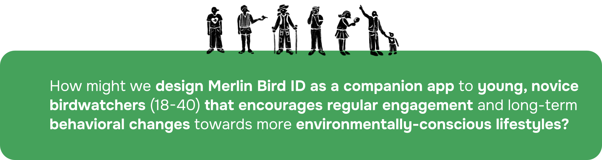
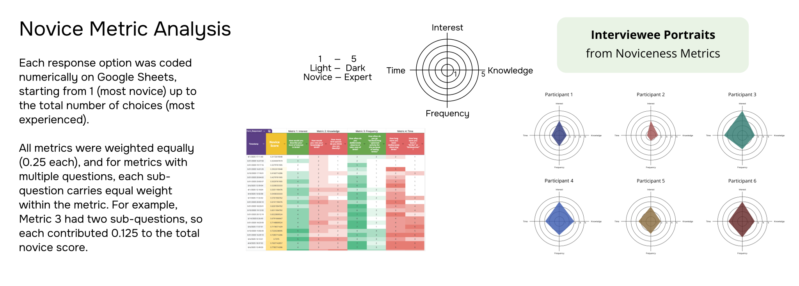
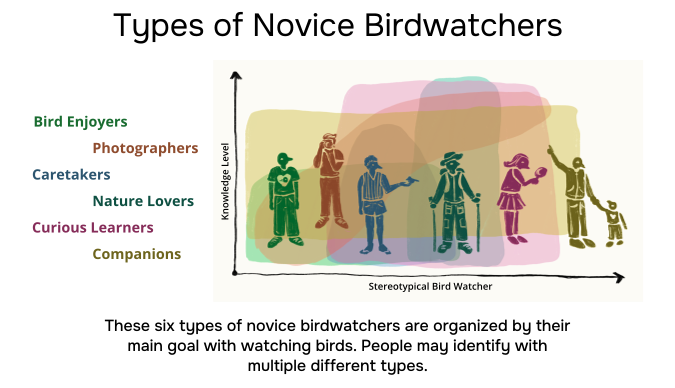

Discovery
Survey, field observations, and media review built a first profile of “young novice birder.”
Supporting Beginner Birdwatchers with Merlin Bird ID
My main contribution was building the project’s noviceness metric: a survey-based scoring system that helped us move from broad recruitment to interview demographics, then into qualitative measures of beginner behavior.
“Novice” was not one user type, so Merlin needed adaptable support for different beginner goals, confidence levels, and learning contexts.

Merlin Bird ID is a free bird identification app from the Cornell Lab of Ornithology with more than 3M active users. Before designing features, I helped the team define what “novice” meant in this context: someone might like birds, recognize common species, use Merlin often, and still lack confidence in the field.

I built the novice metric approach used to screen and compare participants. That work connected quantitative survey responses to interview selection and later helped us interpret qualitative differences between novice birders.
Our team delivered a research report and Merlin redesign concepts. I also designed the capstone poster, but the main project output was the research-backed redesign direction for supporting novice birdwatchers.
Survey, field observations, and media review built a first profile of “young novice birder.”
Survey scores shaped interviewee selection and gave us a demographic spread to compare.
Interview and shadowing data turned the numeric score into a richer view of novice behavior.
The research method started with a structured survey, but the survey was not only for recruitment. I used it to build a working measure of noviceness, select interviewees with more intention, and create a baseline that we could later challenge through interviews, shadowing, coding, and affinity mapping.

I broke noviceness into interest, knowledge, frequency, and time spent birdwatching, so we were not relying on a vague beginner label.
Each dimension contributed equally to the novice score. When one dimension had multiple questions, the weight was split across sub-questions.
We prioritized lower novice-score participants who were Seattle-based, aged 18-40, available in person, and open to reflective conversation.
Six 90-120 minute interviews helped us understand what the score could not show: confidence, social context, tool access, and invisible knowledge gaps.
Outdoor shadowing showed how participants noticed birds, used Merlin, asked questions, and reacted when identification became uncertain.
Transcript coding and affinity mapping turned individual stories into patterns, then pushed us to treat novice as a profile rather than a single ladder.

The metric was useful because it made our early decisions explicit, but it became more meaningful only after qualitative work complicated it. Interviews and shadowing showed that someone can be novice through knowledge, tools, confidence, identity, or community access. That shift shaped the rest of the project.
The score helped us find the sample; qualitative work explained the differences inside it. Some participants lacked tools, some lacked local birding knowledge, some lacked community confidence, and some had interest without identifying as birdwatchers.


The redesign work was not a styling exercise. Each concept responded to a different support need we found in research: habit formation, birding basics, or social confidence.
Weekly challenges, badges, and birding recaps can encourage engagement without turning birding into a chore.
Learning mode, embedded tips, and ID summaries help new birders understand the world of birdwatching beyond a single match.
Events and shareable achievements create lightweight ways to build community without requiring Merlin to become a full social platform.


The novice score helped us recruit and compare participants, but it did not explain why someone felt confident, intimidated, curious, or disconnected. Its real value was giving us a structured starting point for qualitative research.
I would keep the metric pipeline: survey questions, numeric coding, weighted score, interview selection, then qualitative validation. It made our research decisions explicit.
I would treat noviceness less like one score and more like a profile. Interest, knowledge, frequency, time, tool access, and community confidence do not always move together. I would also separate the report narrative from showcase materials earlier, so the redesign rationale is easier to follow.
After sponsor feedback, we ran four rounds of user testing with our initial interviewees. Each tester preferred a different feature, and those preferences lined up with the kind of novice birder they were. That was useful because it pushed the redesign away from one “best” beginner feature and toward optional support that different novice profiles could choose from.